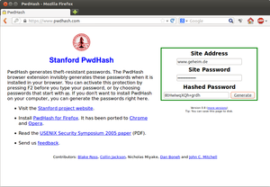
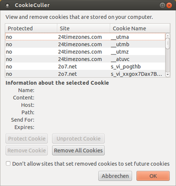
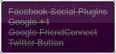
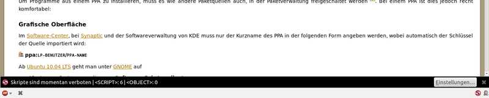
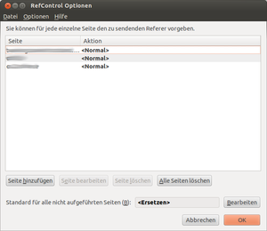

Sicheres Surfen
 Man kann fragen: Warum sicheres Surfen? Wir arbeiten ja mit Linux und mit Firefox. Da kann ja nichts mehr passieren. Natürlich hat man mit dieser Aussage zum Teil Recht. Von Windows-Würmern und -Viren, die durch ActiveX das System infiltrieren, kann unter Linux nicht die Rede sein.
Man kann fragen: Warum sicheres Surfen? Wir arbeiten ja mit Linux und mit Firefox. Da kann ja nichts mehr passieren. Natürlich hat man mit dieser Aussage zum Teil Recht. Von Windows-Würmern und -Viren, die durch ActiveX das System infiltrieren, kann unter Linux nicht die Rede sein.
Ein anderer Aspekt ist jedoch der Schutz der Privatsphäre im Internet: Das Surfverhalten jedes einzelnen wird protokolliert und zu Persönlichkeitsprofilen zusammengestellt. Mit Hilfe einiger Add-ons, die hier vorgestellt werden, kann man das Tracking erschweren und so seine Privatsphäre ein Stück weit schützen. Wer jedoch wirklich sicher und anonym im Internet unterwegs sein will, dem sei der Artikel Sicherheit/Anonym Surfen empfohlen.
Sichere Passwörter¶
Jeder kennt das Problem, man registriert sich bei der x-ten Internetseite mit dem selben Login-Namen und dem selben Passwort. Unterschiedliche Logins zu verwenden ist ja unbequem und wer kann sich denn schon zig unterschiedliche Passwörter merken...
Am Ende nutzt man für "unwichtige" (und vielleicht sogar wichtige?!) Websites das tolle Passwort "1234", wie 2,5% der Surfer einer Chat-Community, deren verschlüsselte Passwort-Datenbank frei zugänglich war. Solch ein Passwort ist jedoch über eine Wörterbuchattacke in Sekunden geknackt.
 Aber was tun? Sichere Passwörter lassen sich wie im Sicherheits 1x1 beschrieben erstellen. Doch auch hier stellt sich wieder das Problem, möchte man für jede Website ein eigenes Passwort nutzen, hat man gegen die inflationäre Vergrößerung des eigenen Passwort-Pools zu kämpfen. Schließlich benutzt man doch immer wieder das eigene "sichere" Passwort auf unterschiedlichen Websites und setzt sich der Gefahr aus, dass ein schwarzes Schaf unter den Websitebetreibern das übermittelte Passwort missbraucht oder es von jemand anderem "geklaut" wird.
Hier setzt die Open-Source Lösung PwdHash  der Mitarbeiter Blake Ross, Dan Boneh und John Mitchell des Stanford Security Lab an. Die Erweiterung PwdHash für Webbrowser wie Firefox verwandelt das für eine Website eingegebene Passwort zusammen mit der zugehörigen Domain automatisch in einen Hash-Wert.
der Mitarbeiter Blake Ross, Dan Boneh und John Mitchell des Stanford Security Lab an. Die Erweiterung PwdHash für Webbrowser wie Firefox verwandelt das für eine Website eingegebene Passwort zusammen mit der zugehörigen Domain automatisch in einen Hash-Wert.
Wie soll das Ganze nun funktionieren? Der User installiert das Plugin in seinen Browser und surft auf die die gewünschte Website (z.B. www.geheim.de), dort legt er sich einen neuen Account an, drückt jedoch vor der Eingabe des Passwortes F2 bzw. setzt vor das eigentliche Passwort zwei "@" Zeichen.
Dies sagt dem Add-on, dass das eingegebene Kennwort als Hash übermittelt werden soll, woraufhin es aus der Domain "www.geheim.de" und dem Passwort "ganzgeheim" das für diese Kombination absolut einmalige Passwort "EBLc2MnbBd2y" generiert und übermittelt.
Will man sich später wieder auf der Website einloggen muss man nicht dieses komplizierte Passwort eingeben, sondern drückt vor der Eingabe des Passwortes wieder F2 bzw. gibt "@@ganzgeheim" als Passwort an, was wieder PwdHash veranlasst den Hash zu übermitteln.
Möchte man existierende Accounts mit besseren Passwörtern versehen, so loggt man sich einfach mit den bekannten Daten ein und ändert das Passwort, wobei man die schon genannten Methoden F2 bzw. "@@" für das neue Passwort nutzt. Nach der Änderung ist das Hash-Passwort aktiv.
Sitz man also an einem Rechner auf dem ein Browser mit der PwdHash-Erweiterung installiert ist, muss man sich nur ein (oder natürlich auch mehrere) Passwörter merken, die man als Grundlage für die Hash-Codes verwendet, nicht jedoch kryptische Zeichenfolgen. Man hat also ohne ein Quentchen Komfort zu verlieren, ein Höchstmaß an Sicherheit!
Passwörter wie
EBLc2MnbBd2y, die nur durch extreme Gewalt (sprich Rechenzeit) zu knacken sind.Für jede Webseite ein eigenes Passwort.
Was aber wenn man am Arbeitsplatz oder an der Universität in einem Rechnerpool sitzt und die Erweiterung nicht installieren kann? Für diesen Fall wurde die Website www.pwdhash.com eingerichtet. Auf dieser Seite läuft ein JavaScript, in das man die gewünschte Website und das Passwort eingeben kann und so den Hash-Code erhält. Dieses Script läuft lokal auf dem Rechner des Benutzers, sodass die Daten, laut den Angaben auf der Website, nicht an den Webserver der Stanford Universität übermittelt werden.
Umgang mit Cookies¶
 Cookies haben ihre Vor- und Nachteile. Sie machen einem das Surferleben leichter, indem man sich z.B. nicht immer wieder bei Foren oder anderen Webseiten anmelden muss. Sie erlauben jedoch auch Rückschlüsse auf das Surfverhalten eines Internetbenutzers.
Firefox bietet einige Optionen, um mit Cookies umzugehen. Beispielsweise kann man in neueren Firefox-Versionen auch für einzelne Websites Berechtigungen festlegen, die von den Standard-Einstellungen abweichen. Dies ist im Sicherheits 1x1 beschrieben.
Cookie Culler¶
Wem dies nicht reicht, der kann Cookie Culler nutzen. Diese Erweiterung erlaubt es, einzelne Cookies als geschützt zu markieren und alle anderen Cookies beim Beenden des Browsers löschen zu lassen. Dazu löscht man am besten nach der Installation der Erweiterung alle Cookies und surft anschließend alle wichtigen Webseiten ab, von denen man weiß: "ja ich brauche die Cookies dieser Webseiten". Anschließend markiert man diese wichtigen Cookies als geschützt. Hierzu einfach auf "Extras -> CookieCuller" klicken. Anschließend sollte man dem Cookie Culler noch erlauben, alle nicht geschützten Cookies nach dem Schließen von Firefox zu löschen. Dazu einfach unter "Extras -> Add-ons" den Cookie Culler auswählen und auf "Einstellungen" klicken.
Nun kann man problemlos und komfortabel im Netz surfen und alle Cookies, denen man begegnet einsammeln. Nach einem Neustart des Firefox sind alle unwichtigen Cookies gelöscht, und man kann wieder "unbefleckt" weitersurfen.

Ghostery¶
Ghostery zeigt an, ob das Surfverhalten auf der gerade besuchten Seite ausgespäht wird. In der Statusleiste wird nach der Installation ein kleines Geist-Symbol wie z.B. eingeblendet, welches die Anzahl der gefundenen Zählpixel (Web-Wanzen) anzeigt. Außerdem wird beim Besuch einer neuen Internetseite in einer kleinen Infobox angezeigt, mit welchen Mitteln die jeweiligen Seite das Surfverhalten erfaßt. Der Quellcode der gefundenen Skripte kann mit der Erweiterung eingesehen werden. Zum Blockieren der Inhalte sollte NoScript installiert werden.
NoScript¶
Javascript ist eine objektbasierte Skriptsprache, die von der Firma Netscape entwickelt wurde, um statische HTML-Seiten dynamisch zu gestalten. Damit lassen sich praktische Dinge wie interaktive Menüs gestalten, aber auch nervende und prozessorlaststeigernde Werbeticker oder animierte Schneeflocken erzeugen, die speziell zur Weihnachtszeit ein Muss für manche Websites sind. Zusätzlich gab es auch schon Schwachstellen in der Einbindung von JavaScript in Webbrowser, so dass auch echte Sicherheitslecks durch JS bestanden.
Firefox bietet nur die Möglichkeit, JavaScript für alle Websites zu aktivieren bzw. zu deaktivieren. Das hat zur Folge, dass man bei jedem Besuch einer Website mit einem nützlichen JS-Skript in den Browsereinstellungen JS aktivieren müsste, wenn man diese Website richtig nutzen möchte, aber JavaScript nicht allgemein erlauben will.
Die Firefox-Erweiterung NoScript bietet nun die Möglichkeit, eine JavaScript-Whitelist (auf Deutsch: eine Positiv-Liste) aufzubauen. In dieser Liste werden alle Websites aufgeführt, die JavaScript ausführen dürfen. Bei allen anderen Websites wird JavaScript geblockt. Diese Whitelist macht durchaus Sinn, da die Websites, bei denen man JS wirklich braucht, wohl an einer Hand abgezählt werden können.
Durch Linksklick auf das NoScript-Symbol und auf "xyz erlauben" wird die Seite xyz automatisch (und auch zukünftig!) mit den neuen Einstellungen neu geladen - ein manuelles Einfügen in die Whitelist ist daher unnötig. Sofern auf der Seite auch Skripte von anderen Websites enthalten sind, sind diese im NoScript-Menü extra erwähnt. Häufig handelt es sich dabei um "Datensammler" wie DoubleClick oder Google Analytics - diese Websites müssen üblicherweise nicht in die Whitelist aufgenommen werden, da die eigentliche Website trotzdem funktioniert. In diesem Fall wird von NoScript in der Firefox-Statusleiste die Meldung ausgegeben: "Skripte sind teilweise erlaubt".
Außer JavaScript kann NoScript außerdem noch Plugins blockieren. Dies lässt sich in den NoScript-Einstellungen unter "Eingebettete Objekte" konfigurieren. Ist auch bei "Platzhaltersymbol anzeigen" ein Haken gesetzt, wird auf geblockten Seiten mit z.B. einer Flash-Animation an deren Stelle ein "Platzhalter" angezeigt, der ähnlich wie ein "Parkverbot"-Schild aussieht - ein Beispiel ist auf der Noscript-Homepage zu sehen. Ein Klick auf diesen Platzhalter erlaubt in diesem Falle Flash temporär, ohne dass die Seite in die Whitelist aufgenommen werden muss.
Was von Noscript geblockt wird, wird im Übrigen in der Firefox-Statusleiste angezeigt. Beispiel:
Skripte sind momentan verboten | <SCRIPT>: 8 | <OBJECT>: 1
Das bedeutet, dass 8 JavaSkript- und 1 Plugin-Element geblockt werden. Diese Informationsleiste lässt sich auch über "Benachrichtigungen" in den NoScript-Einstellungen deaktivieren oder nach einer gewissen Zeit ausblenden.
Mehr Informationen zu den weiteren Funktionen von NoScript bietet die NoScript-Website .

RefControl¶
Firefox sendet beim Aufruf einer Webseite dem Webserver die URL der zuletzt besuchten Webseite (siehe Referrer). Um das zu verhindern, gibt es RefControl . Refcontrol lässt sich nach der Installation unter "Extras -> Add-ons -> RefControl -> Einstellungen" einrichten bzw. wieder deaktivieren. Dort lässt sich auch unter "Standard für alle nicht aufgeführten Seiten" - wie der Name schon sagt - eine Standardeinstellung einrichten. Diese kann man dann entweder auf eine individuelle URL oder auf "blockieren" setzen.
SSLv3 abschalten¶
Um sich gegen die Poodle-Lücke zu schützen, ruft man die Pseudo-URL about:config auf und ändert den Wert von "security.tls.version.min" auf 1. Ab Firefox 34 soll diese Lücke automatisch geschlossen sein.
Da prinzipiell alle Browser betroffen sind, sei noch auf die Anleitung So wehren Sie Poodle-Angriffe ab  (heise Open Source, 10/2014) verwiesen.
(heise Open Source, 10/2014) verwiesen.
RC4 deaktivieren¶
Der Verschlüsselungs-Algorithmus RC4 gilt unter Experten als unsicher. Gerüchten zufolge sei die NSA sogar schon soweit, diese Verschlüsselung in Echtzeit knacken zu können. Grund genug, um RC4 im Browser zu deaktivieren.
Hierzu muss wieder about:config aufgerufen werden. Dort sucht man nach rc4 - dabei sollten min. 4 verschiedene Werte angezeigt werden. Diese setzt man durch einen Doppelklick auf false.
Nativen Tracking-Schutz ab Firefox 39 aktivieren¶
Ab Version 39 verfügt Firefox über einen eigenen Tracking-Schutz, der derzeit allerdings erst manuell in der Konfiguration aktiviert werden muss. Dazu ruft man die interne Seite about:config auf und sucht nach privacy.trackingprotection. Dabei sollten 2 relevante Einträge herausgefiltert werden, deren Wert man mit einem Doppelklick auf true setzt. Mehr dazu auch vom Mozilla Support unter Firefox - Schutz vor Verfolgung .
Bleachbit¶
Das Programm ist als Systembereinigungsprogramm nicht nur für Firefox interessant. Weitere Informationen sind im separaten Artikel Bleachbit zu finden.
Links¶
BetterPrivacy
- weiteres Firefox Add-onFirefox Tuning zur Absicherung
- Raven WikiSicherheit/Anonym Surfen
 Grundlagenartikel
GrundlagenartikelFirefox
Übersichtsartikel
- Erstellt mit Inyoka
-
 2004 – 2017 ubuntuusers.de • Einige Rechte vorbehalten
2004 – 2017 ubuntuusers.de • Einige Rechte vorbehalten
Lizenz • Kontakt • Datenschutz • Impressum • Serverstatus -
Serverhousing gespendet von